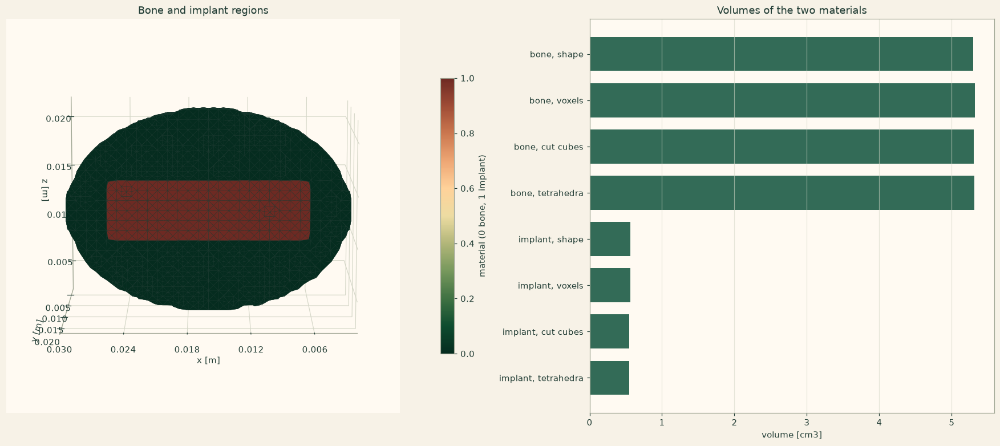

Docs › Examples › Simulation mesh from scanned data
Image-based meshing · 3D
Simulation mesh from scanned data
A segmented CT image of a bone with a cylindrical implant turned into one tetrahedral mesh of both materials without any CAD model.
Run locally with OneSimulation. The example downloads are free. Running them requires an activated runtime. The current pilot runs on macOS on Apple Silicon with CPython 3.13. Installation and activation · View pilot plans. Scope of the reference checks.

What it computes
OneSimulation reads the label array, finds the faces where the labels change to a fraction of a voxel, smooths them and fills the image with tetrahedra from a cut grid of cubes, every label a region of one conforming mesh; a mesh of cut cubes is made from the same image. The script that writes the image comes with the notebook.
What it checks
The meshed bone has 5.311 cm3 against 5.320 cm3 of voxels and 5.299 cm3 for the scanned ellipsoid less the implant, the implant 0.547 cm3 against 0.560 cm3 of voxels and 0.566 cm3 for the cylinder, in 147,968 tetrahedra; the cut-cube mesh agrees with the tetrahedra to 0.2 %.
The notebook
The complete notebook, cell by cell. Run it to produce the figures and the comparison printout.
Computed tomography and magnetic resonance imaging deliver stacks of images; segmentation turns them into a three-dimensional array of labels, one integer per voxel and material. Medical devices, geological cores, foams and castings with pores are modelled from such data.
LabelImage(labels, spacing, names=...) (onesim.meshing) reads the array. OctreeMesher fills it with tetrahedra from a grid of cubes that is cut where the label changes: the faces lie where the labels change, smoothed instead of following the steps of the voxels, and every label becomes a region of one conforming mesh. CartesianMesher fills it with cut cubes instead.
The image mesh_from_scanned_data.npy is written by mesh_from_scanned_data_geometry.py: 64 x 48 x 48 voxels of 0.5 mm, label 1 for an ellipsoidal bone with half axes 14, 10 and 10 mm and label 2 for an implant of 3 mm radius and 20 mm length inside it.
Reference. The volumes of the scanned shapes, \(V_\text{implant} = \pi r^2 \ell\), \(V_\text{bone} = \tfrac43\pi abc - \pi r^2\ell\), and the voxel counts times the voxel volume \(s^3\).
import numpy as np
from onesim.meshing import CartesianMesher, LabelImage, OctreeMesher
from onesim.meshing.quality import quality
from onesim.visualization import plots, theme
theme.set()The image
Each label gets a name; the names become the regions of the mesh and the faces between them.
labels = np.load("mesh_from_scanned_data.npy")
spacing = 0.5e-3
image = LabelImage(labels, spacing, names={1: "bone", 2: "implant"})
counts = {
name: int((labels == value).sum()) for value, name in ((1, "bone"), (2, "implant"))
}
print(
f"image {labels.shape} voxels of {spacing * 1e3} mm; bone {counts['bone']} voxels, implant {counts['implant']} voxels"
)Meshes
Tetrahedra of 1 mm at the faces, growing to 2 mm inside; and cut cubes of 1 mm.
mesh = OctreeMesher(target_size=1e-3, coarsening=1).generate(image)
cubes = CartesianMesher(target_size=1e-3, coarsening=1).generate(image)
print(
f"tetrahedra: {mesh.cell_count} cells, regions {', '.join(mesh.regions)}, outer boundary {', '.join(sorted(mesh.geometry.boundaries.all.members))}"
)
print(f"cut cubes: {cubes.cell_count} cells, regions {', '.join(cubes.region_names)}")
view = plots.Camera(elevation=25, azimuth=-55)
fig = plots.figure(1, 2, size=(16, 7))
plots.mesh(
mesh,
groups=("outside",),
legend=False,
camera=view,
title=f"Outer face of the scan: {mesh.cell_count} tetrahedra",
ax=fig[0],
)
plots.mesh(
mesh,
cell_values=quality(mesh)["shape"],
limits=(0, 1),
plane=((0.016, 0.012, 0.012), (0.0, 1.0, 0.0)),
label="shape measure",
camera=plots.Camera(elevation=10, azimuth=90),
title="Cut through bone and implant",
ax=fig[1],
)
plots.show()Results
Volumes of the two regions in both meshes against the voxel counts and the scanned shapes.
exact = {
"implant": np.pi * 0.003**2 * 0.020,
"bone": 4 / 3 * np.pi * 0.014 * 0.010 * 0.010 - np.pi * 0.003**2 * 0.020,
}
cells = quality(mesh)["size"]
regions = {name: cells[list(mesh.regions[name])].sum() for name in exact}
in_cubes = {name: cubes.cell_volumes[cubes.regions == name].sum() for name in exact}
print(
"region tetrahedra [cm3] cut cubes [cm3] voxels [cm3] scanned shape [cm3]"
)
for name in exact:
print(
f"{name:9s} {regions[name] * 1e6:15.4f} {in_cubes[name] * 1e6:17.4f} {counts[name] * spacing**3 * 1e6:14.4f} {exact[name] * 1e6:18.4f}"
)
print(
f"cells: bone {len(mesh.regions['bone'])}, implant {len(mesh.regions['implant'])} tetrahedra in one conforming mesh"
)Figure
The tetrahedra cut open and coloured by their material, and the volumes of both materials in the two meshes, the voxels and the scanned shapes.
material = np.zeros(mesh.cell_count)
material[list(mesh.regions["implant"])] = 1.0
fig = plots.figure(1, 2, size=(16, 7))
plots.mesh(
mesh,
cell_values=material,
limits=(0, 1),
plane=((0.016, 0.012, 0.012), (0.0, 1.0, 0.0)),
label="material (0 bone, 1 implant)",
camera=plots.Camera(elevation=10, azimuth=90),
title="Bone and implant regions",
ax=fig[0],
)
plots.bars(
[
f"{name}, {kind}"
for name in exact
for kind in ("tetrahedra", "cut cubes", "voxels", "shape")
],
[
1e6 * value
for name in exact
for value in (
regions[name],
in_cubes[name],
counts[name] * spacing**3,
exact[name],
)
],
horizontal=True,
ylabel="volume [cm3]",
title="Volumes of the two materials",
ax=fig[1],
)
plots.show()Going further
Give bone and implant their stiffness with regionwise and load the implant, read a stack of images with numpy from your own segmentation, or smooth noisy labels with LabelImage(..., smoothing=...).